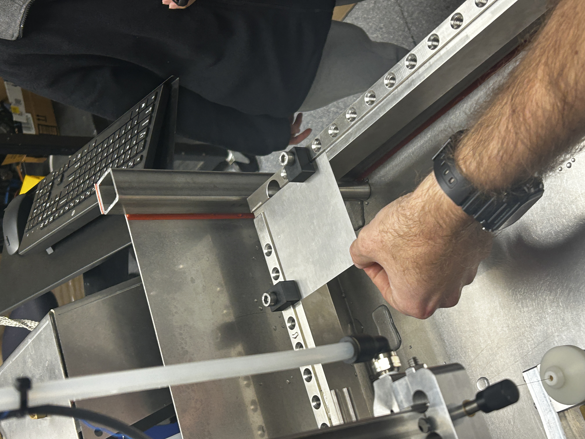
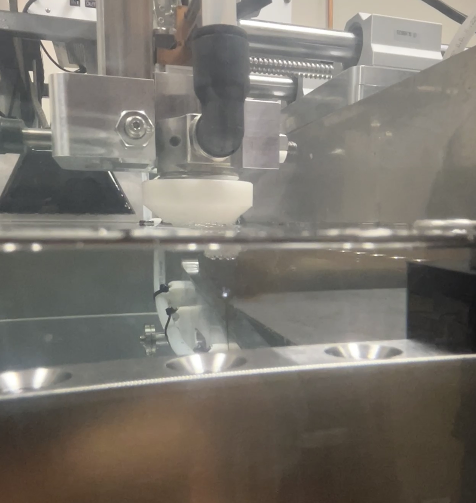
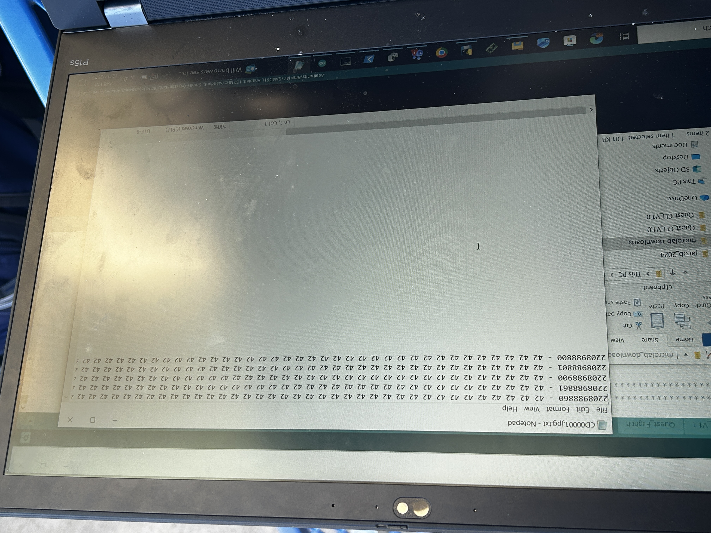
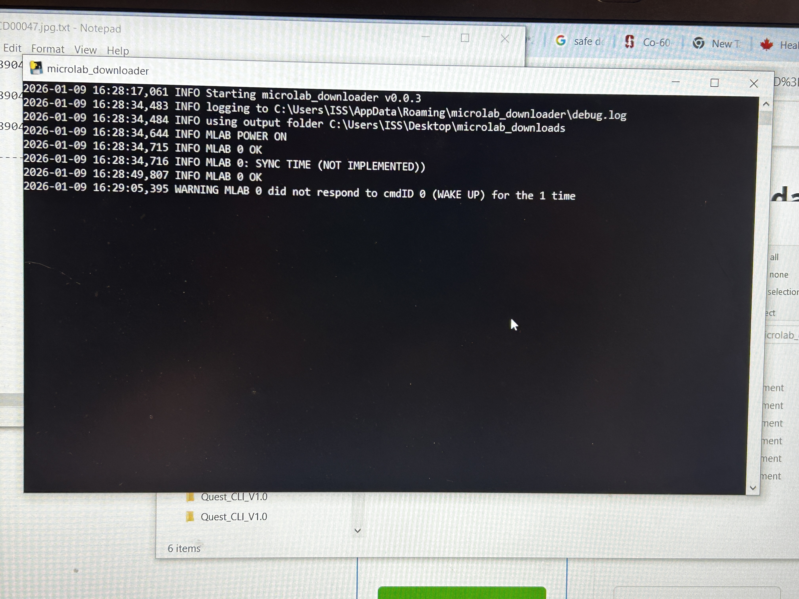
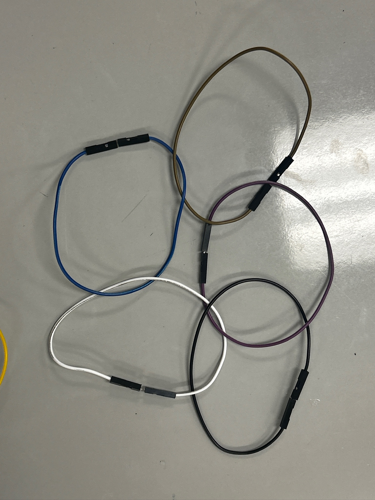
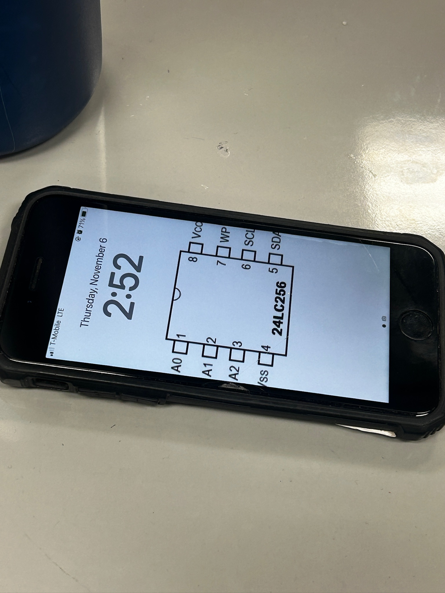
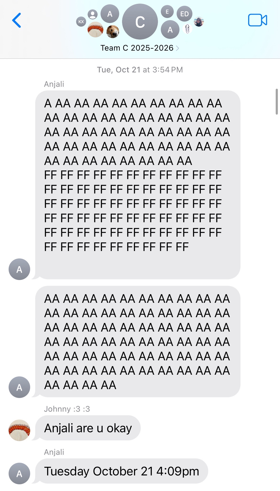
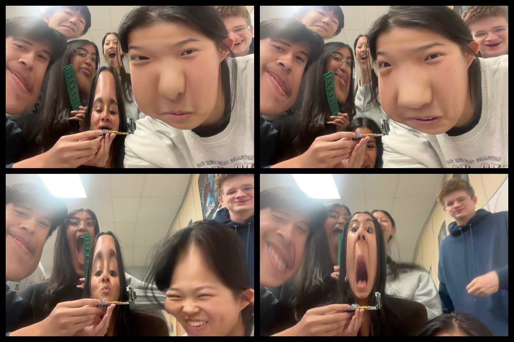
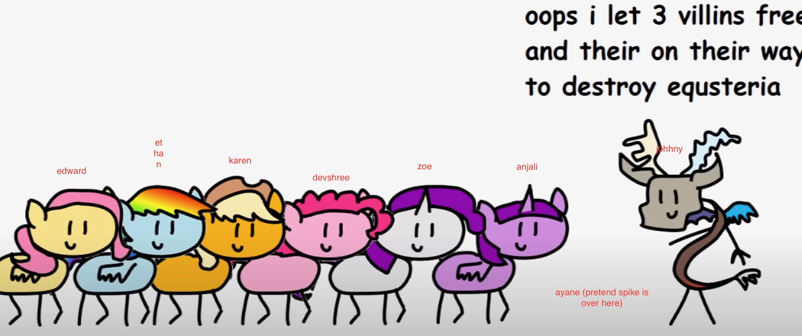

After tested the soldered board with the oscilliscope, we found that it was indeed the problem--RESET pin floating and not connect to HIGH. Unfortunately, we can only abandon the pcbs (our babies) and use the manually soldered board instead, but at least this helps us to find the main reason.
Cutting Tungsten Shielding
Another challenge was to cut the Tungsten, a super brittle, hard, high-proton metal.
WHY IS THERE ALWAYS SPECIAL METAL TO CUT IN ISS...


We finally got an excuse to learn and get trained on operating Wire EDM machine after begging our dear mentor Sean Kintner for 2 weeks. EDM stands for electrical discharge machine, not electrical dance music!!! It uses high current running within the wire to cut metal under water with super high precision, about ± 0.001 mm.
However, 3 days after we learned to operate EDM, the machine's filter was found to be invaded by hazardous fungi. To prevent our project getting delayed, I still have to cut it with diamond blade dremel.
The Annoying SD card logging and Mcmeck simulator
Logging data from the EEPROM chips down to SD card requires a special library ---- SD fat (HELP I can't stop laughing during the engineering review)
We(johnny anjali and i) developed an efficient algorithm to read all 512000 bytes of data and check SEU bit flips.

I believe it's due to the different makeup of the radiation source. Cosmic rays can cause bit flips because they include high-energy charged particles and secondary particles, such as protons, heavy ions, muons, and neutrons. When these particles pass through semiconductor memory, they can deposit enough charge in a tiny region of silicon to change the stored value from 0 to 1 or from 1 to 0. Co-60, on the other hand, mainly emits gamma rays, which interact with electronics more indirectly and create less concentrated ionization.

Here are some funny photos while we build this experiment as a team.





Anyway, this experiment was on board its journey on Jan 31st. I wish it all the best!!!
My journey in ISS Research Lab also officially came to an end on May 20th. I am so grateful for the time spent with the ISS community, my ISS teammates for the past 2 years, and it has been such an honor to have this kind of experience as an international student. The cool research process, cool experiments, the fun time with team mates and mentors...
I still believe that fundamental science has no boarders, though perhaps the ISS does.